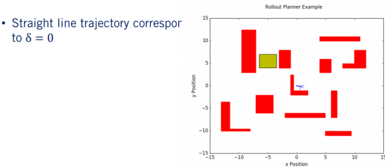
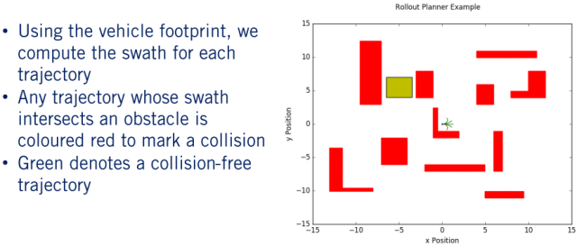

Reactive Planner的原理及实现
Reactive Planner 作为一种常见的规划控制方法，国内外已经有很多人进行了理论研究和工程应用。其大体实现流程可以分为这么几个部分：1. 生成轨迹簇；2. 碰撞检测；3. 选择最优路径。下面逐个介绍各个部分。
1. 车辆的动力学模型
需要理解的是，Reactive Planner 作为 Local Planner 的一种思路，必须考虑车辆的运动学模型，理由是轨迹的可执行与否就在于是否满足车体的运动学约束。在这简单区分车辆的运动学模型和车辆的力学模型区别（课程中介绍）
运行学模型侧重于线性和角速度，有时也使用其导数如线加速度和角加速度作为其输入，而力学模型则侧重于力和扭矩作为输入。在这简单拿一个运动学粒子模型进行了对比。对于路径规划和轨迹优化，我们都是使用运动学模型，使得问题在计算上更容易处理，而将忽略力学模型带来的影响留给控制器去解决。
下面重新回顾下车辆的经典运动学模型 – 自行车模型：
车辆的基本坐标用(x, y)来表示，航向设为相对于 x 轴的 。这三个值共同确定了车辆的当前状态。对于自行车模型，在每个时间点给出的输入是速度和转向角。这些输入以及当前状态使我们能够根据自行车模型的运动学方程来计算轨迹如何随时间变化。要注意的是，我们一般是无法直接控制车辆达到某状态的，不能说直接告诉车辆去(x, y)特定位置。但是，我们可以设计一系列控制输入，从而根据车辆的运动学方程到达所述位置。控制输入的顺序与车辆遵循的轨迹相对应。
明白这些后，下面就要介绍如何进行操作了。对于车辆的运动方程，其实质就是一个连续时间微分方程，在实际使用中对模型进行离散，从而有效地生成给定控制输入序列的轨迹。离散连续时间微分方程的方法有很多种，我们在这里使用简单的零阶保持。
对这些方程进行离散化的结果，就是我们可以递归地实现实现后面所有的更新，使用给定的输入序列迭代地构建完整的轨迹，也就是 Dynamic Programming 。仅使用先前计算的点来递增地计算轨迹的下一个点，而不是重新计算之前所有的先前更新。
简而言之，就是说在得知车辆当前状态及车辆的运动学模型之后，通过改变车辆的控制输入来进行前向积分，迭代地生成轨迹。换句话说，就是在 control space 中 concrete。这个思路同样可以用于车辆的预测。明白这些之后，下面就要考虑如何生成无碰撞的路径了。我们可以通过提供一系列的转角输入，来生成足够多的轨迹，再对每条轨迹进行避障检测。
2. 碰撞检测
根据第一部分，碰撞检测的前提是有一条预定的轨迹，同时获取到周围的环境信息。难点在于，确保安全无冲突的最佳路径不仅需要有关环境的完美信息，而且还需要大量的计算能力，才能以精确的形式进行计算，尤其是对于复杂的形状和环境。 对于需要实时规划的自动驾驶而言都是无法提供的。 从Module2中可以看到，利用网格占用提供给我们的信息是不完美的估计，这意味着我们需要在碰撞检测算法中添加缓冲区，以使它们更具容错性。
在这有两种思路来实现，swatch-based和circle-based方法。 二者的区别还是很大的。
2.1 swatch-based 碰撞检测
在这先介绍swatch-based算法是如何检测碰撞的。确切的说，碰撞检测其实就是沿着路径的每个点旋转和平移车辆的足迹。足迹可以理解为是长方形的车辆，也就是车辆占的空间。车辆的足迹根据每个点的航向进行旋转，或者根据路径点的位置进行平移。操作结果用集合S来概括，其中 p 是一组路径点， F 表示一个函数，该函数返回需要变换的操作。
为了达到目标状态，需要将角度进行偏转 ，然后平移坐标点。沿着路径的每个点执行完相应操作后，汽车沿路径的最终条带(swatch)就生成了,由每一次变换后生成的足迹的并集组成。然后，我们检查条带，看内部是否有障碍。 如果存在，则路径包含碰撞，否则为无碰撞。
下面，我们需要以抽象形式进行条带计算，并将其转换为可由计算机计算的离散公式。假设我们有一个用占用栅格表示的汽车足迹和路径的离散表示。汽车足迹包含K个点，路径的终点很长。 从算法上讲，计算条幅需要我们旋转和平移汽车足迹中的所有K个点，并对路径中的每个点乘以1。让我们来看一个使用占用栅格的旋转和平移的具体示例。 假设我们的占用栅格的分辨率为1米，并且我们的足迹占用以下三个栅格点； (0，0)，(1，0)和(2，0)。
假设我们有一个要旋转的路径点，并且要平移到(1, 2, )上。首先，我们应该绕着原点将足迹中的每个点旋转 。得到(0, 0) ，(0, 1)和(0, 2)的新网格点。然后进行平移变换，最终得到 (1, 2)，(1, 3)和(1, 4)。 回想一下，此转换中步骤的顺序很重要。 如果先平移然后围绕原点旋转，则对于转换后的点，我们将获得错误的位置。
为了获得实际的占用栅格索引，我们用大写的X和Y表示偏移x和y点，它们分别是占用栅格的x和y维度的大小。 我们可以将其除以网格分辨率增量，以获取占用网格中的关联索引。 然后，我们将这些点的每一个添加到一个设置的数据结构中。 由于我们要维护一个集合，因此我们确保在我们的条带中没有重复的点。 可以想象，随着问题的扩展，这种计算变得非常昂贵，这使得在执行实时规划时很难使用。
此外，由于我们的信息不完善，在计算条幅时使用准确的足迹可能很危险，因为障碍物位置没有缓冲。 这种基于条带的方法在计算上通常代价很高，所以当我们在运动规划算法中存在大量重复项时（如Lattice Planner中的情况），它通常很有用。
由于我们在Lattice Planner的每个步骤中都受到一小组控制动作的约束，因此我们也受到一小组束约束的约束，可以预先离线地计算它们的并集。 在线执行冲突检查时，问题减少到多个阵列查找。
2.2 circle-based 碰撞检测
为了帮助缓解信息不充分和大量计算需求的问题，我们经常使用保守近似进行碰撞检查，牺牲最优性以提高速度和鲁棒性。在这种情况下，最优性是由你选择适当的目标函数定义的，由于我们已切换到近似冲突检查以获取计算性能，因此我们必须使用过于保守的近似值。 选择特定近似值的目的是找到一种能够在不牺牲安全性的情况下提高算法速度的方法，同时还能最大程度地减小轨迹变得次优的程度。
在这使用重叠的圆圈来完全覆盖之前汽车矩阵主体的足迹，即汽车的足迹是所有三个圆圈的足迹的子集。对比之前的条带很容易明白，矩形所产生的条带都是重叠圆所产生的条带的子集。这样可以保证轨迹更加安全。假设我们的圆形足迹中存在一个障碍物，但其实从条带来看并没有障碍物，因此碰撞检查会报告。但实际上并不会发生，比较抽象地说，碰撞检查可能包含一些“假性的阳性冲突”(不知道该如何翻译），但不会包含“假性的阴性冲突”。简言之，如果障碍物位于圆圈内，则可能也不会碰撞。但如果在圆圈外，绝对不可能碰撞。这样做为车辆提供了很好的缓冲，有助于减轻信息不充分带来的问题。
使用圆近似的好处是，检查点是否在圆内在计算上很方便。只需要检查障碍物的任何一点与圆心之间的距离是否小于半径。例如，此塔从圆心开始的位置小于圆的半径，因此将报告碰撞。 但是，对于第二个圆，吊架位于圆的半径之外，则此特定部分不会发生碰撞。 如果使用栅格，每个栅格点可以很方便地提供最近对象的距离，其实就是数组中的简单查找，相对于检查任意多边形相交而言，提升效果显著。
需要注意的是，使用保守近似很容易丢失掉原本可行的无碰撞路径，或者消除了狭窄开口的通道，使得车辆陷入困境或者冗余计算更多的路线。应该根据使用规划算法和占用栅格的不同，合理地选择碰撞算法。
最后提及一点，因为轨迹的离散化，所以我们的碰撞检查的精度也会受到离散化时选择的分辨率的影响。假设我们具有相同的路径和足迹，但是计算出的一条带的分辨率比另一条带的分辨率大得多。 我们可以看到，较粗的分辨率会导致条带中的缝隙较大，如果这些位置处有障碍物，则可能会导致错误。 我们为碰撞检查选择的分辨率越精细，它将越准确。 但是，较高的分辨率也会产生计算成本。 因此，我们也需要在准确性和计算速度之间取得适当的平衡。
3. 轨迹扩展算法
经过前两部分的介绍，下面进入 Reactive Planner 的核心部分了。从整体功能上重新梳理遍，首先规划器使用第一部分后面提到的轨迹生成方法来生成一组候选轨迹，即离散控制量进行前向积分获取多条轨迹。车辆可以从当前工作空间开始遵循该轨迹。然后我们获取车辆本地周围环境的障碍物信息，使用第二部分提到的算法确定哪些路径没有碰撞。然后，在这些无冲突的路径中，我们选择一条最大化目标函数的路径，其中将包含一个奖励朝着目标前进的术语。
通过重复执行此操作，我们最终得到了一个 receding horizon planner，该算法对环境做出反应，同时朝着目标不断前进。 下面详细介绍每个步骤：
3.1 轨迹簇生成
该算法的第一步是在每个时间步生成轨迹簇。对于轨迹展开过程而言，每个轨迹都对应于固定时间范围内的固定输入。我们可以在可用的输入值范围内统一采样这些固定输入，以生成各种潜在的候选轨迹。仍然是那个万年不变的问题，如果我们仅使用较小范围的输入，那么我们的计算时间将会缩短。 但是，在计算中可能会遗漏一些潜在的候选轨迹，这可能会降低生成的轨迹的质量。 但是，对过多的候选轨迹进行采样意味着在每个步骤上我们都会有额外的计算开销，因为每个附加轨迹都需要生成，检查碰撞并进行评分。
选择了一组输入后，通过使用第一部分提到的车辆运动学模型向前传播状态来沿轨迹生成未来状态。回想一下，对于自行车模型而言，输入分别是转向角和速度。如果我们保持速度恒定，改变转向角偏移到，可以生成一组弧作为我们的候选轨迹。
之前在第一课中提到过，这些弧线是通过前向递归计算运动方程得到的。接下来要检查下哪些弧没有碰撞。

3.2 碰撞检查
对于碰撞检测算法，我们假设给出了一个栅格，该栅格代表了车辆工作空间的离散化。该离散化以矩阵的形式存储，其中矩阵的每个值将指示工作空间中的相应位置是否被占用。然后，我们使用第二部分所讲的基于条带的方法执行冲突检查。沿着生成的路径变换车辆的足迹，取所有时间生成足迹的并集来生成测绘带。
在这，汽车所占空间面积对应于栅格中的一组索引。因此，沿路径的每个旋转和平移点也将对应于栅格中的不同索引。这些索引将存储在一组数据结构中，以消除重复项。然后，我们可以检查条带的每个点，以查看条带的哪些点与占用网格的占用元素重叠。通过遍历测绘带集合中的每个点并检查栅格中的相关索引，来判断是否发生碰撞。如果条带中的任何点被占据，则该轨迹包含碰撞。 遍历上一步中生成的每个轨迹后，我们将获得一组无碰撞的运动学上可行的轨迹，然后可以使用目标函数对其进行评分。
3.3 目标函数
目标函数的功能是奖励或惩罚某个目标点和区域的执行。最简单的情况就是，将候选轨迹的末端与目标节点的距离乘以一个参数，加入到目标函数中。除此之外，也可以加入最小化到车道中心线的距离，惩罚路径的曲率。另外，有时候也希望奖励最大化到最近障碍物距离的路径，以最大程度地增加规划器未来时间步骤可用的可行路径的灵活性。需要明白的是，没有完美的目标函数，只能根据需求构建符合自己需求的目标函数。如下图作为参考。
有了目标函数后，我们就可以遍历无碰撞的轨迹，并根据目标的制定方式选择最大化目标函数或最小化代价的路径。
3.4 例子
下面根据一个实例进行讲解：
如果所以，网格中的障碍物用红色来表示，目标区域用黄色表示。汽车的起点是(0, 0 ,0 )，假设我们的转向角的范围介于到，步长为８，恒定速度魏0.5 m/s。另外，假设规划过程使用的时间步长为0.1s，并且每个规划轨迹总共持续2s。使用在第一部分提到的轨迹传播算法，则可以为转向范围内的每个选定转向角生成一组路径。
第一条轨迹的转向角为 ，因此，我们可以看到该轨迹向右弯曲。 我们的下一个轨迹的转向角为 ，并且你可以看到，生成的轨迹的曲率比第一个轨迹小。
接下来，我们获得零转向角轨迹，从而使汽车沿直线前进。

正转向角轨迹与负转向角轨迹对称，并按预期将汽车向左转。
现在有了一组候选轨迹，接下来使用碰撞检测算法检查每个轨迹是否无碰撞。

在沿着每个轨迹平移和旋转足迹后，我们检查结果条带中的每个栅格索引，以查看是否存在障碍物。 如果任何索引包含障碍物，则该路径将被标记为发生碰撞，我们用红色表示。 所有无碰撞的路径都被涂成绿色，然后我们可以使用目标函数进行评估以找到最佳路径。
在这里我们的目标函数是到目标的距离。现在将此距离目标最小的路径涂成黑色，这样就完成了我们的第一次规划迭代。到这里，我们就有了车辆执行的轨迹，但是我们不会在下一个规划周期之前完全执行此轨迹，相反，我们只执行循环的前几个点，确切的数字取决于规划的频率，我们的规划范围将根据我们的进度向前移动，也是之前讲过的应用于车辆控制的 receding horizon planner 方法。
3.5 receding horizon 举例
综上所述，在每个时间段上，我们规划一个两秒钟的轨迹，但一次只执行一秒钟。 这样，每个规划周期，我们的规划范围的结束时间将向前移动一秒钟。
这样被称作 receding horizon planner ，因为在每个规划周期中，我们都有一个固定的规划时间范围，其n次缓慢地向我们达到目标的时间点后退。 此处说明了这一点，其中黑色是将在当前循环上执行的轨迹部分，橙色部分是剩余部分。一旦下一个规划周期开始，我们将再次重复整个过程。 我们继续执行此过程，直到计算出到达目标区域的轨迹为止，并在每次迭代结束时进行检查。
到目前为止，整个规划算法就基本介绍完了，整体的实现脉络还是很清晰的，需要注意的是，Reactive Planner 算法是属于Local Planner，也就是说，它没有规划直接到达目标的路径，相反，它根据目标函数生成子路径，类似贪婪算法一样对子路径进行采样。这样很可能导致算法陷入僵局，并且通常会导致规划器仅找到次优路径。但是，通过该算法将规划的核心放在目标区域，大大地降低了目标区域的复杂性，并且速度足够快，可以用作实时规划。
4. 动态窗口算法
对整个算法做一个补充，动态窗口算法的功能在于在车辆的轨迹上设置线性和角加速度的约束，以提高车辆在规划周期内的行驶舒适度。回到第一部分讲到的自行车模型，输入只考虑转向角和线速度，没有考虑诸如加速度和加加速度等高阶项。这些高阶项正是导致乘客体验不好的原因，因此我们应该尝试在运动学模型中解决此问题。限制所选输入，以考虑快速变化对乘坐舒适性的影响。
因此，在这我们魏自行车模型添加线速度和角加速度范围的约束。同时我们要权衡这样操作对规划轨迹的影响。 回想一下，自行车模型的角速度由 给出。因此，角加速度的大小大致由起始和结束转向角的角速度之间的绝对值差，除以我们使用的时间步长得出。最后公式转换为如下形式：
下面以一个具体例子进行说明，假设我们的自行车模型在所有候选轨迹上均以每秒一米的恒定线速度运动，并且当前转向角为。
假设此机器人的最小和最大转向角为分别和，并且我们的转向角步长为。 另外，假设我们的轨迹以0.1秒的时间分辨率进行采样，并且我们的自行车模型的长度为1米。 最后，让我们将角加速度限制为每秒0.6弧度平方。
然后我们将导出的转向角约束应用到问题。我们当前的转向角增量为。 通过将每个潜在的转向角代入我们的转向角集，我们发现，如果我们将转向角更改为或。 则违反了角加速度约束。
在这我们将不允许的轨迹改为红色，绿色的轨迹仍然可以用于上部分开发的 Reactive Planner 步骤中。由此可以看出增加的约束会一定程度上限制车辆的可操作性，但同时促进更舒适的轨迹。总的来说，动态窗口法可以使我们在规划过程中对轨迹的演变方式施加更多限制，从而使运动能够更好地满足广泛的目标。
参考文献：
- Fox, D.; Burgard, W.; Thrun, S. (1997). “The dynamic window approach to collision avoidance”. Robotics & Automation Magazine, IEEE. 4 (1): 23–33.doi:10.1109/100.580977. This gives an overview of dynamic windowing and trajectory rollout.
- M. Pivtoraiko, R. A. Knepper, and A. Kelly, “Differentially constrained mobile robot motion planning in state lattices,” Journal of Field Robotics, vol. 26, no. 3, pp. 308–333, 2009. This paper is a great resource for generating state lattices under kinematic constraints.